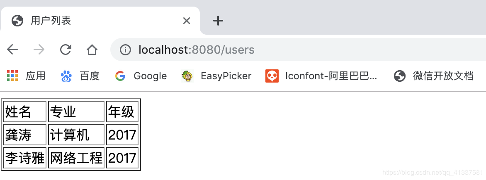

先看下官网的介绍：
==Thymeleaf是适用于Web和独立环境的现代服务器端Java模板引擎。
Thymeleaf的主要目标是为您的开发工作流程带来优雅的自然模板 -HTML可以在浏览器中正确显示，也可以作为静态原型工作，从而可以在开发团队中加强协作。
Thymeleaf拥有适用于Spring Framework的模块，与您喜欢的工具的大量集成以及插入您自己的功能的能力，对于现代HTML5 JVM Web开发而言，Thymeleaf是理想的选择。==
在SpringBoot中，SpringBoot对Thymeleaf提供了良好的支持，同时也提供了自动化配置，因此在SpringBoot中使用Thymeleaf非常快捷方便。
创建方法建议使用IDEA快速创建SpringBoot项目，并选择web、Thymeleaf依赖：
创建完成后，IDEA自动在pom中加入了web和Thymeleaf依赖管理，pom.xml:
<dependencies>
<dependency>
<groupId>org.springframework.boot</groupId>
<artifactId>spring-boot-starter-thymeleaf</artifactId>
</dependency>
<dependency>
<groupId>org.springframework.boot</groupId>
<artifactId>spring-boot-starter-web</artifactId>
</dependency>
<dependency>
<groupId>org.springframework.boot</groupId>
<artifactId>spring-boot-starter-test</artifactId>
<scope>test</scope>
</dependency>
</dependencies>项目架构：
SpringBoot为Thymeleaf提供了自动化配置类ThymeleafAutoConfiguration，源码：
@Configuration
@EnableConfigurationProperties({ThymeleafProperties.class})
@ConditionalOnClass({TemplateMode.class, SpringTemplateEngine.class})
@AutoConfigureAfter({WebMvcAutoConfiguration.class, WebFluxAutoConfiguration.class})
public class ThymeleafAutoConfiguration {...}可以看出相关的配置信息是从ThymeleafProperties类中获得的，进一步查看ThymeleafProperties的源码：
@ConfigurationProperties(
prefix = "spring.thymeleaf"
)
public class ThymeleafProperties {
private static final Charset DEFAULT_ENCODING;
public static final String DEFAULT_PREFIX = "classpath:/templates/";
public static final String DEFAULT_SUFFIX = ".html";
private boolean checkTemplate = true;
private boolean checkTemplateLocation = true;
private String prefix = "classpath:/templates/";
private String suffix = ".html";
private String mode = "HTML";
//省略
}从该配置可以看出默认的Thymeleaf存放位置是classpath:/templates/，即resources/templates/下，刚刚我们使用IDEA创建项目时，已经自动生成了该目录。
我们如果需要对Thymeleaf的配置进行更改，可直接在application.properties中配置：
#是否开启缓存,默认为true
spring.thymeleaf.cache=false
#检查模板文件是否存在
spring.thymeleaf.check-template=true
#检查模本目录是否存在
spring.thymeleaf.check-template-location=true
#模板文件编码
spring.thymeleaf.encoding=UTF-8
#模板位置
spring.thymeleaf.prefix=classpath:/templates/
#模板文件后缀名
spring.thymeleaf.suffix=.html
#Content-type
spring.thymeleaf.servlet.content-type=text/html1、新建User和UserController：
User.java:
package com.gongsir.springboot02.pojo;
public class User {
private String name;
private String major;
private String grade;
public String getName() {
return name;
}
public void setName(String name) {
this.name = name;
}
public String getMajor() {
return major;
}
public void setMajor(String major) {
this.major = major;
}
public String getGrade() {
return grade;
}
public void setGrade(String grade) {
this.grade = grade;
}
}UserController.java:
@Controller
public class UserController {
@GetMapping(path = "/users")
public ModelAndView getUsers(){
List<User> list = new ArrayList<>();
User u1 = new User();
u1.setName("龚涛");
u1.setMajor("计算机");
u1.setGrade("2017");
list.add(u1);
User u2 = new User();
u2.setName("李诗雅");
u2.setMajor("网络工程");
u2.setGrade("2017");
list.add(u2);
//视图模板文件的名字，需在template目录下创建同名模板文件
ModelAndView mv = new ModelAndView("users");
mv.addObject("users",list);
return mv;
}
}2、在模板目录下新建users.html模板文件，显示数据：
<!DOCTYPE html>
<html lang="en" xmlns:th="http://www.thymeleaf.org">
<head>
<meta charset="UTF-8">
<title>用户列表</title>
</head>
<body>
<table border="1px sold black">
<tr>
<td>姓名</td>
<td>专业</td>
<td>年级</td>
</tr>
<tr th:each="user:${users}">
<td th:text="${user.name}"></td>
<td th:text="${user.major}"></td>
<td th:text="${user.grade}"></td>
</tr>
</table>
</body>
</html>3、启动项目，访问http://localhost:8080/users，如图：

本文主要介绍SpringBoot整合Thymeleaf视图技术，并给了一个简单demo演示，想学习更多Thymeleaf知识？看官网吧：https://www.thymeleaf.org/.
不过当前流行前后端分离技术，大多数开发不需要在后端整合视图技术，后端只需要提供接口即可，待续.....